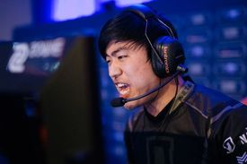

MVP. Sake
Lee "Sake" Jung-hyuk is the primary Assassin for MVP Black. In MVP Black's rise to worldwide prominence, Sake showcased his skills on Valla, Jaina and Kael'Thas.
Dignitas. Bakery
James "Bakery" Baker is a British Support player who currently playing for Team Dignitas. His signature heroes are Uther and Kharazim.
MVP. Rich
Lee "Rich" Jae Won playes HotS for MVP Black. He is considered the best melee assasin player in the world.
Estar. XingC
Kang "XingC" Lunhan is a Chinese Heroes player currently on eStar Gaming. His Greymane play is phenomenal. He actually invented the way greymane is played now.
GFE. Fan

Fan Yang is an American player currently playing for Gale Force eSports. He is one of the most well known player in HotS.
After smashing his way to first place in Heroes of the Dorm 2015, he then went on to win the championship at Heroes Major League, and eventually the Heroes of the Storm World Championship.